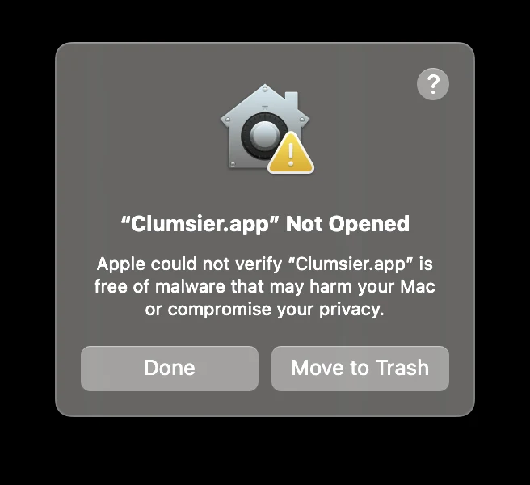
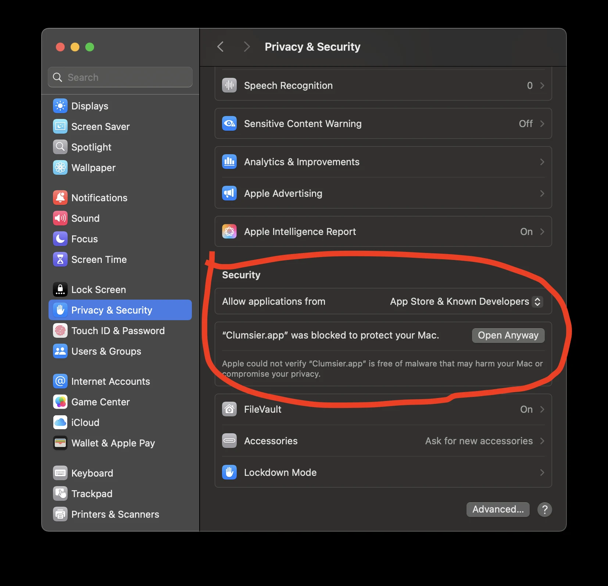

Choose your delay.
Delay data sent by your Mac, data coming back, or both. Start small. Press Stop to return to normal.
COMMUNITY MACOS BETA · FREE & OPEN SOURCE
Some leaps need a little lag.
Add delay, save your settings, and control Clumsier without leaving Dragon Escape.
You can read the code, build it yourself, or ask someone you trust to review it before running it.
Read the source code ↗Open source means you can inspect it. It doesn’t guarantee the app is safe.
M-series Macs · macOS 15.7+ · Beta 2
Intel Macs · macOS 12+ · Testing beta 3
Not sure? Open → About This Mac and look for Chip or Processor.
Intel has passed Rosetta tests, but still needs testing on a real Intel Mac.
Both downloads are DMGs. Open yours and drag Clumsier into Applications.
First time? Start here ↗Your Mac may block the first launch. Apple hasn’t checked this beta through its notarization service. You may need to approve it in Privacy & Security. Here’s exactly how.
Delay data sent by your Mac, data coming back, or both. Start small. Press Stop to return to normal.
Save a sequence of delays and use it again on your next run.
Use hotkeys to change delay while you play. The HUD shows your settings over the game.
FROM DOWNLOAD TO FIRST LEAP
No Homebrew. No Python install. No Terminal commands.
Open Downloads in Finder and double-click the Clumsier .dmg you downloaded. A window will open with Clumsier and an Applications shortcut.
Drag Clumsier.app onto the Applications shortcut. Open Clumsier from Applications, not from the disk image. You can then eject the Clumsier disk image.
Updating? Quit the old app and wait 70 seconds first.
If Apple says it couldn’t verify Clumsier, click Done. Go to System Settings → Privacy & Security, find the blocked app, and choose Open Anyway. Confirm only if you trust this download.


Don’t disable Gatekeeper or SIP. A warning that specifically reports malware or a damaged app is a reason to stop and report it.
In Clumsier’s setup, click Install networking components… and finish macOS Installer. Then return and click Authorize networking. Only the small networking helper needs administrator access. The app runs as your normal user. macOS may also ask you to approve this installer.
Approving the helper doesn’t turn on delay. Clumsier won’t start it when you log in.
On the Hotkeys tab, enable Input Monitoring when asked. Return and try recording a keyboard key. Quit and reopen if macOS requests it. Prefer buttons? Skip this step.
Try a small outbound delay on a practice run. Outbound delays data your Mac sends. Press Start, then use Stop to return to normal. You don’t need a server address.
NEED A HAND?
Try opening the actual downloaded app once, dismiss the warning, then check Privacy & Security again. A managed school/work Mac may restrict exceptions. If the option is still missing, report the exact warning and macOS version. Don’t turn off system protections.
Mouse recording can work even when macOS blocks keyboard access. Open Input Monitoring from the app, enable Clumsier, then quit and reopen. Try “Retry and enable hotkeys”. If you replaced an older build, remove its old entry and add the current Applications/Clumsier.app. Test recording a keyboard key before returning to the game.
Choose Set up networking. Install the components if this is your first launch, then Authorize networking. The helper closes after 60 seconds without the app, so you may need to approve it again. Don’t delete its files or clear your firewall rules.
Quit Clumsier and wait 70 seconds. Replace the app with the newer download, then install its networking components. The full installer alternative also includes Uninstall Clumsier in Applications. If you used the DMG or app ZIP, use the full installer to obtain that uninstaller. Presets and recovery logs are retained.
No. This Mac beta comes from Maximooch’s copy of Clumsier. The original project is reviewing the changes. Choose the download for your Mac’s chip. The Intel beta still needs real-device testing. Newer macOS versions, VPNs, sleep and crash recovery need more testing. Delay changes may behave differently from Windows. Read the release notes for known problems.
Report an issue with your macOS version, chip, exact message, and steps. Say whether this is the downloaded app or a source build. Never post passwords or signing keys. All releases and checksums ↗
Built for Dragon Escapers by Dragon Escapers.
Get Clumsier set up ↑